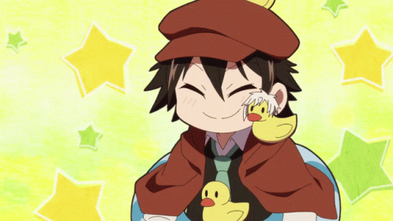

Sobre mí
¿Sobre mí? Bueno, soy Gin, una estudiante de informática de 19 años.
Vivo en España desde hace casi 10 años, pero originalmente soy de Italia. Estuve viviendo con mi madre y en parte con mis abuelos hasta los 9 años, donde nos terminamos mudando con mis abuelos a Canarias, donde decidieron quedarse un año antes de nuestra mudanza.
Al principio llegué sin saber lo más mínimo de Español, pero de alguna manera, en dos meses, de verano sin estudiar, llegué a septiembre sabiendo hablar y entender el español. Obviamente mi nivel no era el mejor, ¡pero oye! Al menos sabía.
Al principio, no me encontraba muy bien. Entre la barrera de idioma y el hecho de que mi carácter era bastante fuerte de pequeña, no tenía mucha gente alrededor mío. Cuando cambié de colegio, las cosas empeoraron. Terminé sin nadie, a pesar de poderme comunicar perfectamente, dado que no le caía bien a una chica "popular" del colegio y habló mal de mí.
Cuando llegué al instituto, tampoco me encontraba muy bien, y claramente el odio que tenía hacia la gente de ese insti era recíproco en contra mía. A los tres años, cambié de instituto, y todo fue a mejor. Mi español a ese punto era perfecto, mis relaciones con la gente mejoraron, y empecé a quedar con gente.
En todo esto, estuve metida en una academia de arte durante 5 años y mi idea era estudiar artes. Cambié idea en tercero de la eso, cuando descubrí lo bien que se me daba la tecnología, la física y las matemáticas. En cuarto de la ESO fue cuando decidí estudiar programación o robótica, dado que habíamos hecho unas páginas web y programado unos robots y me había gustado mucho. Me apunté al ciclo medio de sistemas microinformáticos y redes, y durante el verano aprendí a programar con Python yo solita, encerrada en mi habitación como un topo.
Al final, terminé descubriendo que no podría estudiar programación hasta estar en un ciclo superior. Actualmente estoy en segundo año, y honestamente no me arrepiento de mi decisión. Planeo estudiar DAW o DAM (¿o ambos?)
